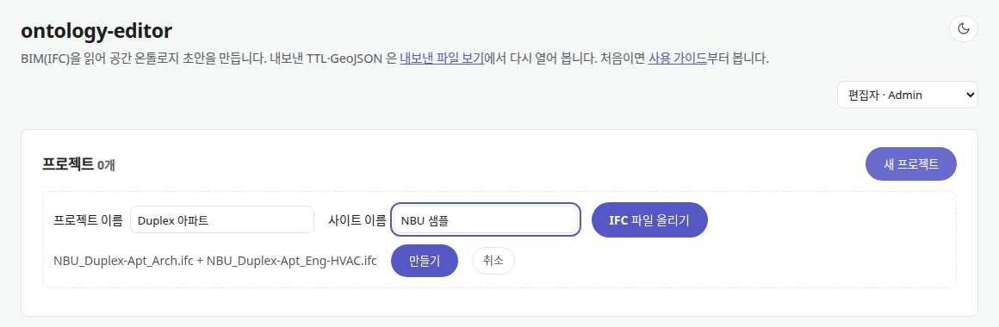
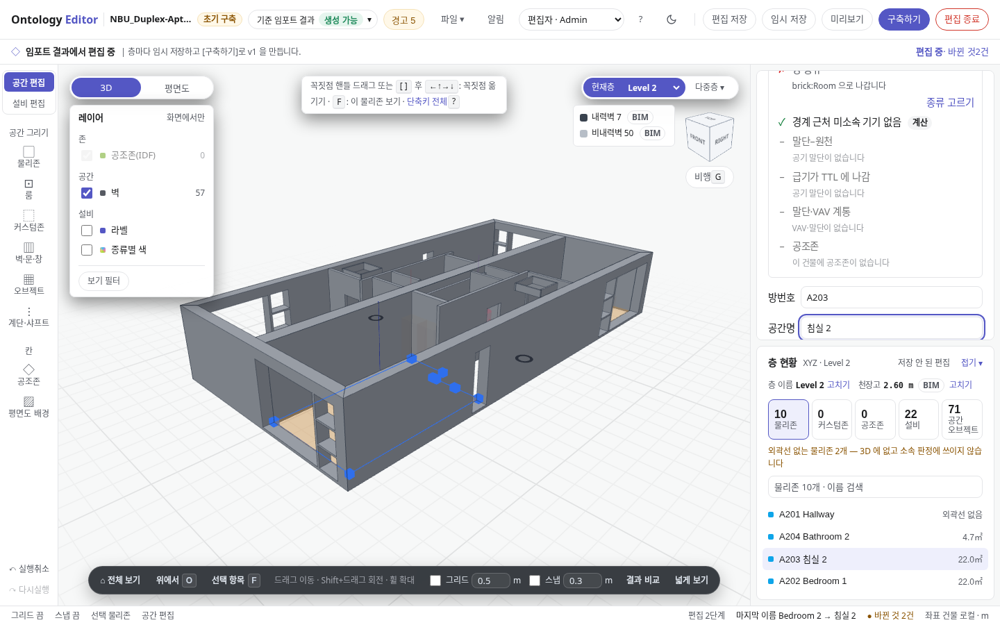
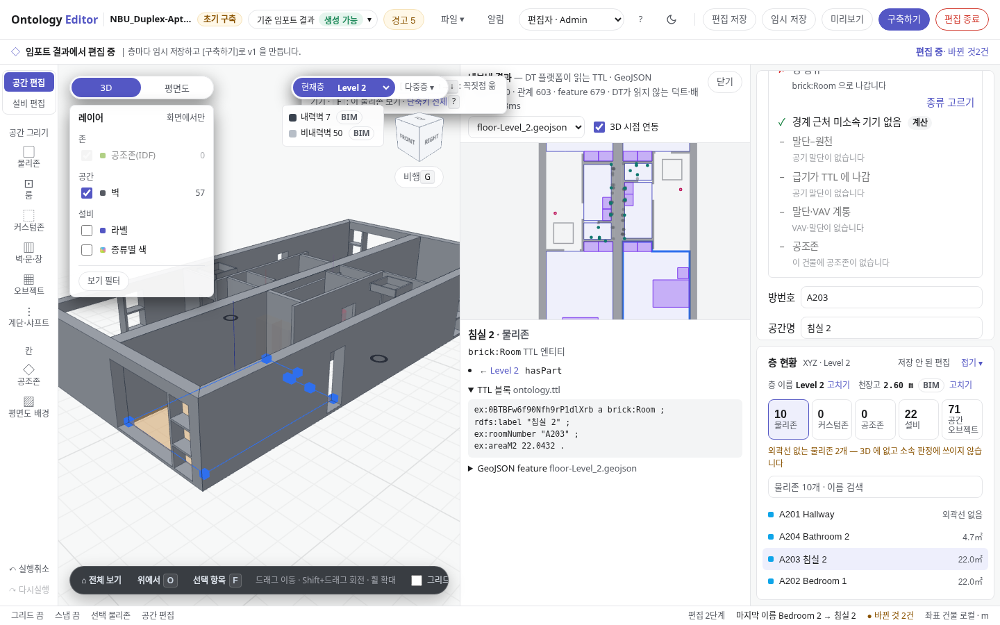
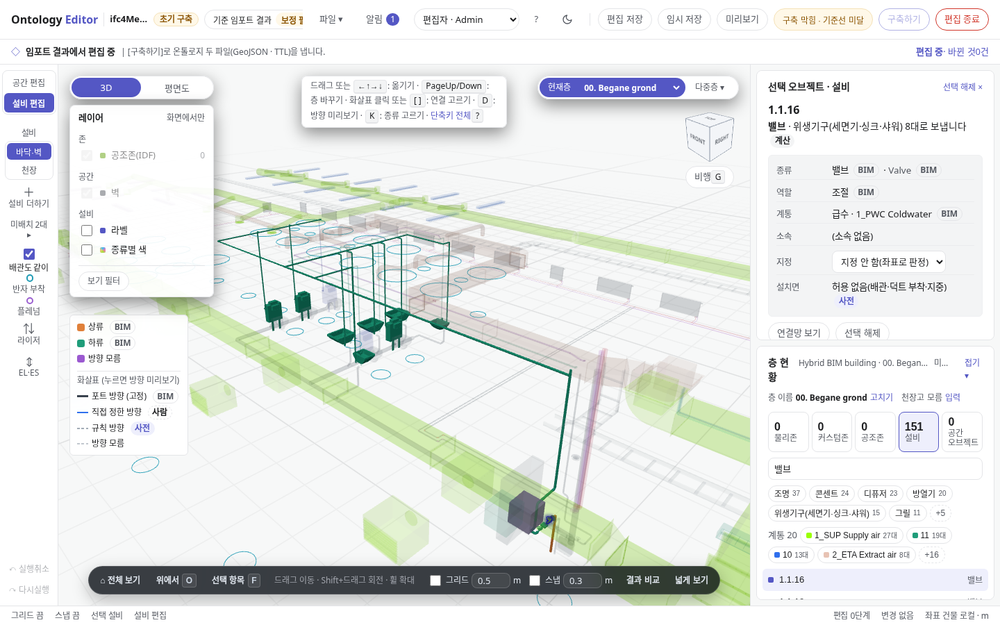
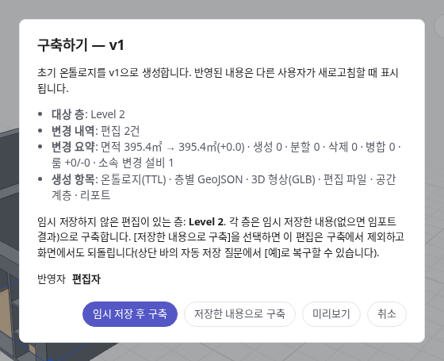
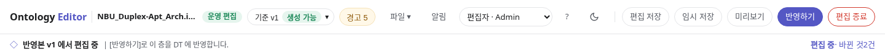
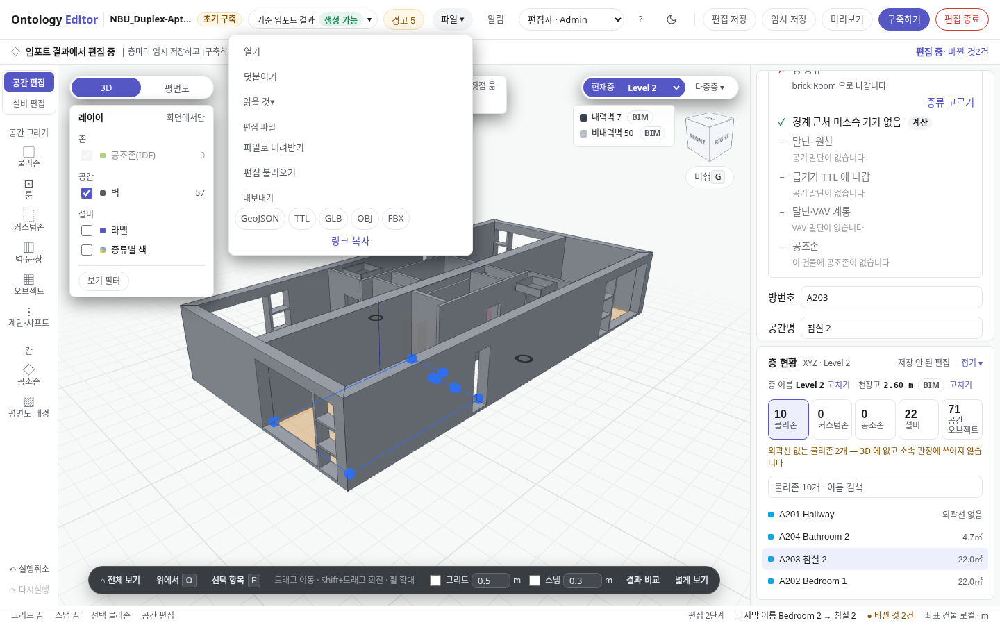

BIM 하나로 DT 공간 온톨로지 만들기
IFC 파일을 올려 층·방·벽·설비를 세우고, 틀린 곳을 고친 뒤, DT 플랫폼이 읽는 두 파일로 내보내는 순서를 실제 화면으로 따라갑니다.
예시는 Duplex 아파트(건축 + HVAC 두 파일)입니다. 흐름 방향 장면만 포트에 방향이 적힌 ifc4Mep 파일로 보입니다.
- IFC건축·설비 파일
- 임포트층 · 방 · 벽 · 설비 · 연결
- 편집이름 · 경계 · 소속 · 흐름
- 구축 · 반영서버에 v1, v2 …
- TTL + GeoJSON의미와 형상, id 로 이어짐
프로젝트를 만든다
첫 화면에서 사용자를 고르고 [새 프로젝트]로 IFC 를 올립니다. 만들면 바로 초기 구축 에디터가 열립니다.

- 사용자먼저 고릅니다. 고르기 전에는 [새 프로젝트]가 꺼져 있습니다.
- 새 프로젝트이름·사이트·파일 세 가지만 받습니다.
- 이름 · 사이트목록에서 프로젝트를 찾는 이름입니다.
- IFC 파일 올리기건축과 설비가 다른 파일이면 함께 고릅니다. 합쳐야 설비가 어느 방에 있는지 나옵니다.
- 만들기올린 파일은 서버에 남고, 다음에는 목록의 [열기]로 이어서 엽니다.
에디터 화면 한눈에 보기
가운데가 3D, 왼쪽이 편집 도구, 오른쪽이 선택 항목의 정보와 층 목록입니다. 3D 는 왼쪽 드래그로 옮기고, 오른쪽 드래그(또는 Shift+드래그)로 돌리고, 휠로 확대합니다. 단축키 전체는 ? 로 봅니다.
- 모드 배지초기 구축(구축 전) · 운영 편집(구축 후) · 보기 중 지금 모드입니다.
- 기준 · 경고읽으면서 건너뛴 것과 등급, 규칙 경고를 엽니다.
- 편집 레일공간 편집(방·벽·문·창)과 설비 편집(M)을 오갑니다.
- 3D · 평면도Shift+V 로도 바꿉니다.
- 현재층보고 고칠 층을 고릅니다.
- 선택 오브젝트3D 나 목록에서 선택한 방·설비의 정보가 여기 뜹니다.
- 층 현황이 층의 물리존·설비 수와 목록입니다. 숫자를 누르면 목록이 바뀝니다.
- 구축하기다 고치면 이 버튼으로 서버에 v1 을 만듭니다(9단계).
층을 고르고 평면도로 본다
방 경계를 고칠 때는 위에서 내려다보는 평면도가 편합니다. 물리존은 BIM 의 방(IfcSpace)이고, 바닥 외곽선이 있어야 3D 에 보이고 설비 소속 판정에 쓰입니다.
- 평면도다시 누르면 3D 로 돌아갑니다.
- 현재층Level 2 로 바꿨습니다.
- 물리존이 층의 방 목록입니다. 이름을 누르면 그 방을 고릅니다.
설비를 선택하면 값마다 출처가 보인다
층 현황에서 설비 목록을 열고 보일러를 선택했습니다. 종류·계통·소속 옆의 작은 칩은 그 값의 출처입니다. 고칠 곳을 찾을 때 이 칩부터 봅니다.
- 선택한 설비목록에서 선택하면 3D 에서 테두리가 칠해집니다.
- 종류 · 사전설비 이름을 사전이 읽어 "보일러" 로 정했습니다.
- 계통 · BIMBIM 파일에 적힌 그대로입니다.
- 소속 · 계산에디터가 좌표로 정한 방입니다(5단계).
- 색 범례선택한 설비에 이어진 것을 상류·하류·방향 모름으로 나눠 칠합니다(8단계).
설비를 옮기면 소속이 바로 바뀐다
설비 편집에서 선택한 설비를 드래그하거나 방향키로 옮깁니다. 보일러를 ↓ 로 몇칸 옮기자 소속이 Utility 에서 Bedroom 1 로 바뀌었습니다. 따로 누를 것은 없습니다.
- 소속옮긴 자리에서 다시 판정한 방입니다.
- 바뀐 것저장하기 전 바뀐 것의 수입니다. 누르면 목록으로 갑니다.
- 마지막 편집방금 한 일이 아래 띠에 남습니다. Ctrl+Z 로 되돌립니다.
어디에 남나 · 좌표는 GeoJSON 의 설비 점이 되고, 소속은 TTL 의 brick:hasLocation 한 줄이 됩니다. 저장하기 전에는 이 브라우저에만 있습니다.
왜 그 방이 되나. 에디터는 설비 위치의 수평 좌표를 같은 층 방들의 외곽선에 대 봅니다. 아래 그림의 설비를 드래그해 보거나, 손잡이로 허용 거리를 바꿔 보세요.
방 이름을 고친다
공간 편집으로 바꾸고 방을 골라 공간명을 고칩니다. "Bedroom 2" 를 "침실 2" 로 바꾸면 목록과 아래 띠가 함께 바뀝니다.

원본- 공간 편집방·벽·문·창을 고치는 모드입니다.
- 공간명여기서 고치고 Enter 를 누릅니다.
- 방 목록바뀐 이름이 바로 보입니다.
- 마지막 편집무엇이 무엇으로 바뀌었는지 남습니다.
어디에 남나 · BIM 파일은 고치지 않습니다. 이름은 TTL 의 rdfs:label "침실 2" 가 됩니다. 다음 단계에서 그 줄을 직접 봅니다.
결과 비교로 내보낼 줄을 본다
[결과 비교]를 누르면 3D 오른쪽에 지금 모델을 내보낸 TTL·GeoJSON 이 뜹니다. 방이나 설비를 선택하면 그것이 TTL 의 어느 블록, GeoJSON 의 어느 feature 가 되는지 보입니다.

원본- 결과 비교패널 오른쪽 위 [닫기]로 닫습니다.
- TTL · GeoJSON선택한 "침실 2" 가
brick:Room블록이 되고rdfs:label "침실 2"가 들어 있습니다.
흐름: 어디서 와서 어디로 가나
설비를 선택하면 이어진 것이 칠해집니다. 하류는 초록, 상류는 주황, 이어졌지만 방향을 모르는 것은 보라입니다. 이 화면은 ifc4Mep 에서 냉수 밸브 하나를 선택한 것이고, 패널 첫 줄에 "위생기구 8대로 보냅니다" 가 보입니다.

원본- 보내는 곳덕트·배관을 건너뛴 기기끼리의 관계입니다. TTL 의
brick:feeds가 됩니다. - 색 범례하류(초록)는 흐름을 따라, 상류(주황)는 거슬러 닿은 것입니다. 방향 모름(보라)은 형상으로 이었다고 추정한 연결이라
brick:feeds로 나가지 않습니다.
파일에 따라 다르다 · Duplex 처럼 포트에 방향이 적혀 있지 않은 파일은 연결은 보여도 칠할 방향이 없습니다. 그런 계통은 규칙이 추정한 방향을 사람이 계통 단위로 확정해야 brick:feeds 로 나갑니다.
왜 거기서 멈추나. 흐름은 방향을 아는 연결만 따라갑니다. 아래 그림에서 기기를 눌러 보세요. 볼트로 조인 플랜지가 BIM 포트, 맨 슬리브가 형상으로 추정한 연결입니다.
구축하기로 v1 을 만든다
다 고치면 [구축하기]를 누릅니다. 층마다 임시 저장한 내용으로 서버에 v1 을 만듭니다. 저장하지 않은 편집이 있으면 [임시 저장 후 구축]으로 함께 넣습니다.

- 대상 층이번 구축에 들어가는 층입니다.
- 생성 항목온톨로지(TTL) · 층별 GeoJSON · 3D 형상(GLB) · 편집 파일 · 공간 계층 · 리포트가 서버에 생깁니다.
- 임시 저장 후 구축지금 화면의 편집까지 넣어 구축합니다.
그다음은 운영 편집이다
구축을 마치면 같은 프로젝트가 운영 편집으로 열립니다. 이제부터 고친 것은 [반영하기]로 층마다 DT 에 반영하고, 반영할 때마다 판이 올라갑니다. 다시 열 때는 프로젝트 목록에서 층을 골라 [운영 편집]으로 엽니다.

- 운영 편집배지가 바뀝니다.
- 기준 v1지금 편집의 출발점이 반영본 v1 입니다.
- 반영하기[구축하기] 자리에 이 버튼이 옵니다.
파일로 내보낸다
서버를 거치지 않고 파일만 받을 때는 [파일 ▾]의 내보내기를 씁니다. 받은 파일은 내보낸 파일 보기에서 받는 쪽 규칙으로 다시 열어 봅니다.

원본- 파일 ▾열기·덧붙이기·편집 파일·내보내기가 여기 있습니다.
- GeoJSON형상입니다. 층마다 파일이 하나씩 나옵니다.
- TTL관계(Brick)입니다. 파일 하나로 나옵니다.
두 파일은 id 하나로 이어진다 · GeoJSON 이 기하를, TTL 이 의미를 맡습니다. 좌표는 TTL 에 넣지 않고, 방·설비마다 같은 id 로 두 파일을 잇습니다. GLB·OBJ 는 보여 주기용 3D 형상이고 두 파일을 대신하지 않습니다.